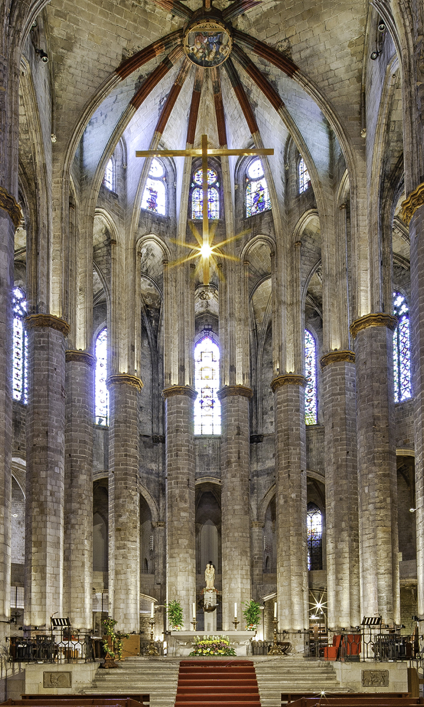

Santa Maria del Mar
Die Locals nennen sie die "Kathedrale des Meeres" – dabei ist sie offiziell nur eine Basilika. Aber kaum ein Kirchenraum in Barcelona wirkt so rein, so schlicht und so erhaben zugleich wie dieser.

Geschichte
Erbaut zwischen 1329 und 1383, auf dem Höhepunkt der katalanischen Seemacht – und zwar nicht von Adligen oder Königen, sondern von den "Bastaixos", den Hafenarbeitern von El Born. Sie schleppten die tonnenschweren Steine in ihrer Freizeit vom Montjuïc bis hierher, unentgeltlich, weil es ihre Kirche war. Bis heute finden sich Schnitzereien dieser Lastenträger an den Kirchentüren. 1428 zerstörte ein Erdbeben die große Rosette, die 1459 neu errichtet wurde; 1909 setzten Anarchisten während der "Tragischen Woche" die Kirche in Brand, wobei die originalen Buntglasfenster und der Altar zerstört wurden.
Warum besonders
Drei fast gleich hohe Kirchenschiffe, Säulen im Abstand von 13 Metern – eine Distanz, die im gesamten Mittelalterbau nie wieder erreicht wurde. Die fast völlige Abwesenheit von Zierrat (eine Folge des Brandes von 1909, aber auch ursprüngliches Baukonzept) gibt dem Raum eine Ruhe, die im sonst so verzierten Barcelona selten ist.
Praktische Hinweise
Liegt direkt im Zentrum von El Born, auf eurem Spaziergang an Tag 4. Eintritt in der Regel kostenlos oder sehr günstig für den Hauptraum, kostenpflichtig für den Turmaufstieg. Abends oft Konzerte (Kammermusik, Orgel).